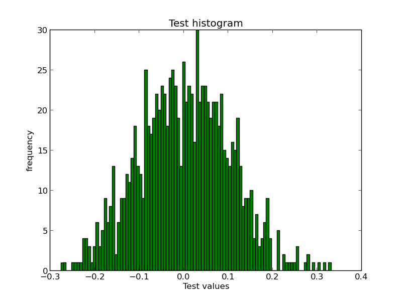

Toolbox: histit.py
(This is the first post of the series I plan to write on some tools I have built over the last couple of years to help me in my day-to-day tasks. I usually put all such tools in the repo toolbox until they turn out sufficiently useful to be worth separating into their own projects).
The first post is about a command line tool named histit.py that I
use for quickly plotting histograms 1 by reading data from text
files. It's basically a simple wrapper over
matplotlib, a library that's quite popular
for plotting all kinds of stuff in Python.
You can download the script from here
$ wget https://raw.github.com/naiquevin/toolbox/master/histit.py
hisit.py depends upon numpy and matplotlib
so first make sure they are installed 2
We need some data for the demo, so let's first dump values from a
random normal distribution into a text file. The numpy.random.normal
function can be used for this.
In [1]: import numpy as np In [2]: with open('data.txt', 'w') as f: ...: f.write('\n'.join(str(float(x)) for x in np.random.normal(0, 0.1, 1000))) ...:
Now we can use histit.py to plot the histogram as follows:
$ python histit.py "Test histogram" "Test values" -d data.txt -a show -t float -b 100
If all goes well, a window 3 will popout with the histogram as shown below. Although the values in your case would be different, a peculiar "bell curve" should be noticeable.

In the command we just run,
- "Test histogram" is the title of the plot,
- "Test values" is the label on the X-axis.
-doption is for specifying the path to the data file-aoption is for action (either ofshowandsave,showbeing the default)-toption is for specifying the type of input expected, herefloatbut the default isint-boption for specifying the no. of bins
Instead of loading data from a file, the script can also accept data
on the standard input stream in which case, the -d option must be
skipped.
$ cat data.txt | python histit.py "Test histogram" "Test values" -a show -t float -b 100
I have been using this on a regular basis for some time but I am not entirely convinced if it's worth publishing as a package on PyPI. Anyway, at least it's got some documentation now :-)
Footnotes
1. A histogram is a graphical representation of frequency distribution. In simpler words, a graph of all unique values in the data plotted against how many times each one appears. When working with sufficient quantity of data, a histogram turns out to be a pretty handy tool to guage the shape of the data at a glance. See also: wikipedia ↩
2. Actually it doesn't depend on numpy directly but before installing matplotlib make sure numpy is installed in order to avoid frustation. ↩
3. GTK window in my case as I am using the GTKAgg backend for matplotlib. Please consult the docs to configure your preferred backend. ↩